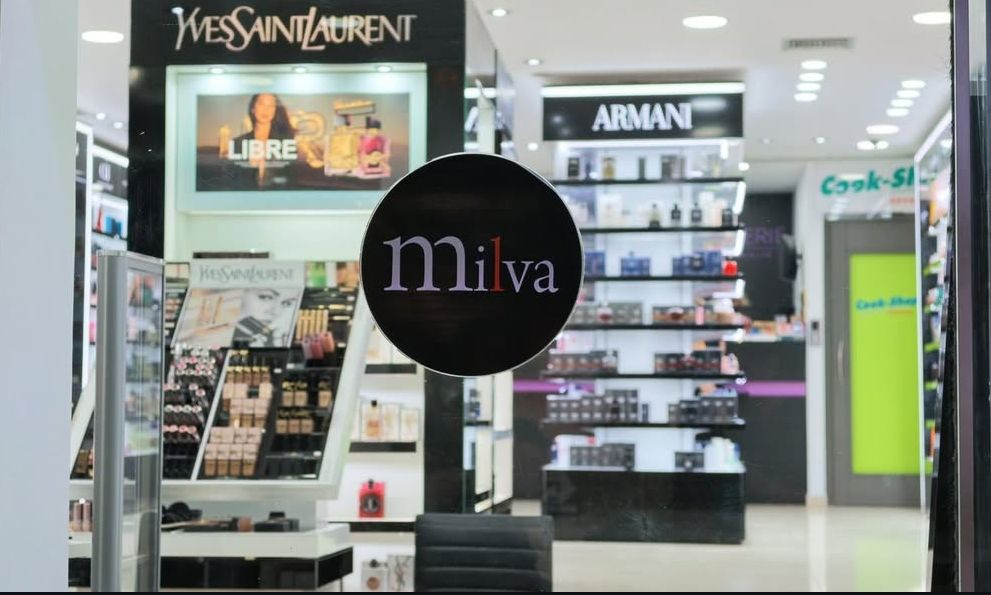

Milva – Galerie de Beauté is een cosmeticazaak in Kos-stad. Het is een parfumerie en een beautywarenhuis in één, met een breed aanbod cosmetica, parfum en verzorging.
Je vindt er make-up van uiteenlopende merken, van betaalbaar tot luxer, en parfum voor dames en heren. Ook huidverzorging, zoals gezichtsverzorging, serums en crèmes, en haarverzorging met shampoos en styling. Daarnaast verzorgingsproducten en accessoires voor beauty en het lichaam.

Het is een brede beautywinkel, niet alleen een parfumerie. In het centrum van Kos is het een van de grotere beautywinkels, en een directe concurrent van Hondos Center voor parfum, make-up en verzorging.
Adres
Meropidos 2, Kos 853 00
Openingstijden
Ma.09:00–14:00 17:00–21:00
Di.09:00–14:00 17:00–21:00
Woe.09:00–14:00
Don.09:00–14:00 17:00–21:00
Vrij.09:00–14:00 17:00–21:00
Zat.09:00–14:30
Zon.Gesloten